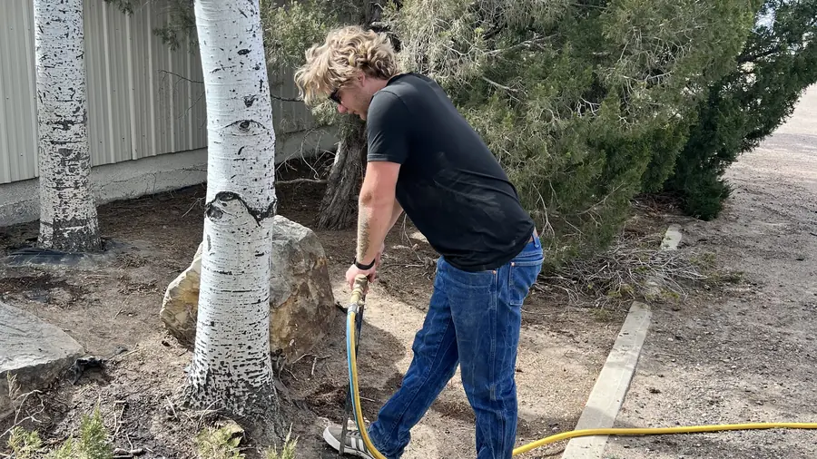

Winter Root Fertilization

Not every tree needs fertilizer, and winter is not automatically the right time to apply it. Many established shade trees do fine without it. Where a tree has a real nutrient problem, targeted deep-root fertilization can help, so we work out which situation you are in before recommending anything.
When Fertilization Helps
Front Range soils are alkaline and often compacted. Fertilization may help when a tree has a confirmed nutrient deficiency or grows in soil low in organic matter. Iron chlorosis in oaks and maples, which shows up as yellowing leaves, is the classic example.
When It Will Not Help
Yellow leaves and slow growth can have many causes, and fertilizer is not a cure for most of them. It will not fix:
- Drought or a watering problem
- Root damage or poor drainage
- Compaction or a tree planted too deep
- Insect damage
Newly planted trees also need time to establish, and excess nitrogen can favor canopy growth when root development is the priority. If water, compaction, or planting depth is the real problem, we will tell you that and save you the cost of feeding a tree that is not hungry.
How We Approach It
- Find the cause first: we look at water, rooting space, planting depth, pests, and disease.
- Confirm the need: a soil test or the tree's symptoms should point to a real deficiency.
- Match the treatment: the product and rate should suit the diagnosed need, species, soil, and site, and follow the label.
- Protect the site: we avoid frozen ground and anywhere fertilizer could run off into drains or waterways.
Winter Watering Often Comes First
On the Front Range, dry winters can leave roots without moisture for weeks. Winter watering is inexpensive and often does more than fertilizer. Our article on when Colorado trees actually need fertilizer and our plant health care page have more detail.
Request an Assessment
If a tree is declining, have it looked at before assuming fertilizer is the answer. Contact American Tree Colorado to schedule a consultation.
Phone: (303) 456-6898
Email: mandi@americantreecolorado.com
Address: Golden, Colorado 80401 USA